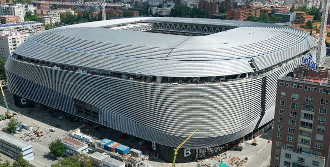

Club History
Real Madrid is one of the most successful football clubs in the world, founded in 1902. The club has a rich history and has been home to legendary players and managers.
Home matches are played at the iconic Santiago Bernabeu Stadium in Madrid, Spain.